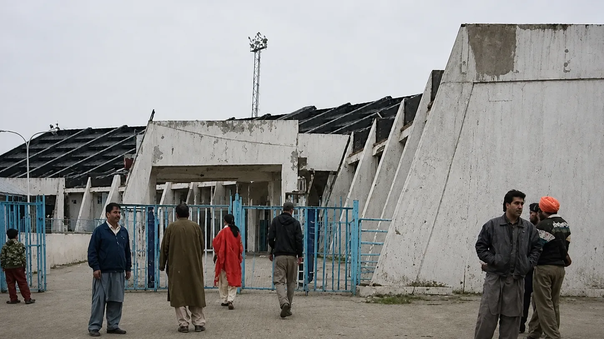
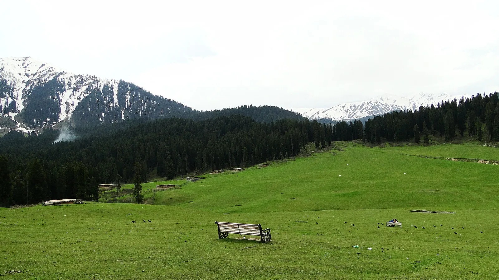
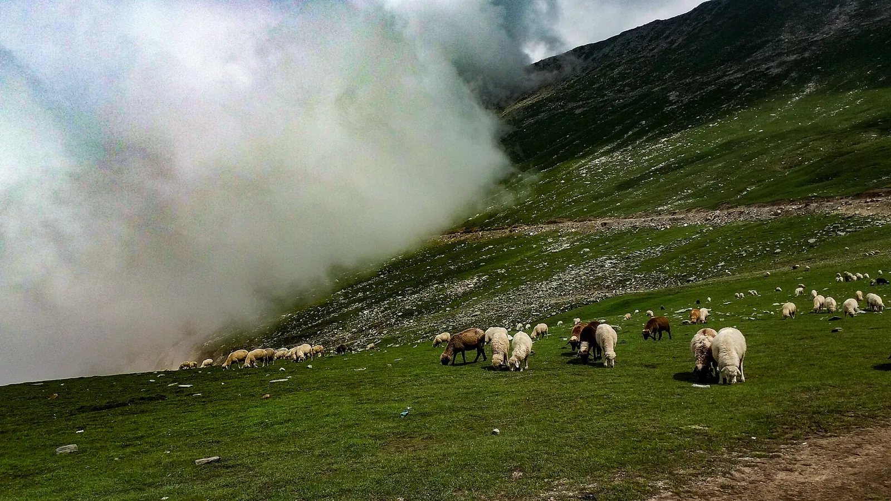
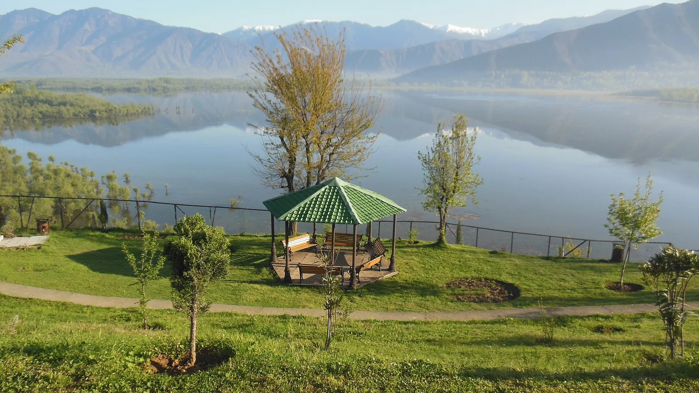
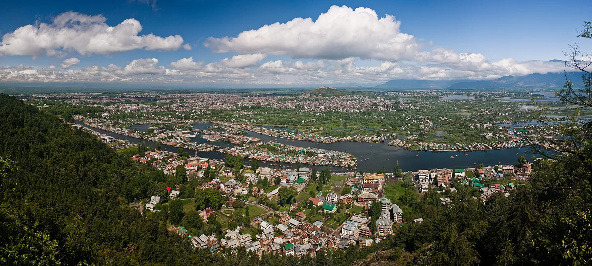
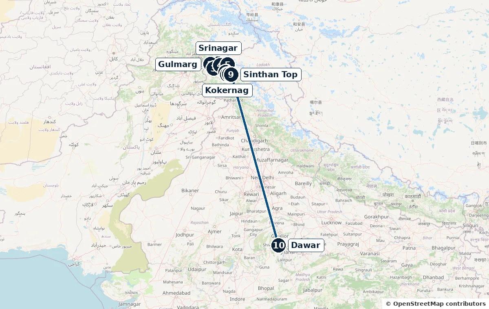

This plan goes beyond the classic Srinagar-Gulmarg-Pahalgam loop. After Gulmarg's gondola you stay in the quiet meadows of Doodhpathri, then in Pahalgam, and cross to the forested valley of Daksum for a day on Sinthan Top. After a night on Dal Lake you drive over Razdan Pass into Gurez, a valley of wooden villages on the Kishanganga that is cut off by snow for half the year. We tidied the original Day 6, which ran Pahalgam to Achabal to Daksum and back to Pahalgam: you now go one way, Pahalgam to Daksum via Achabal and Kokernag.
See it for yourself
Photos from the journey










Where you go
The journey on one map

SrinagarGulmargDoodhpathriPamporePahalgamAchabalKokernagDaksumSinthan TopSrinagarRazdan PassDawar
Day by day, in short
Daily travel brief
Distances are by road for the whole day. The full plan with timings comes with your detailed itinerary.
-
1
Land in Srinagar and drive up to Gulmarg
- Book the Gondola online for tomorrow tonight if we have not already: tickets sell out in season.
-
2
Gulmarg Gondola and the meadows
- Gulmarg Gondola Phase 1: book online in advance; counters sell only what is left.
- Phase 2 to Apharwat: thin air at the top.
- Pony ride to Seven Springs or Alpather Lake: pony and guide rates are fixed by the local association; ask your driver for the card.
-
3
Doodhpathri, the valley of milk
- Doodhpathri has basic electricity and patchy signal.
-
4
Saffron fields and Awantipora on the way to Pahalgam
- Pahalgam has more security checks since 2025.
-
5
Aru, Betaab Valley and Chandanwari
- Aru Valley: your own car cannot go to these spots; a local union cab is hired at a fixed rate.
- Some meadows above Pahalgam, including Baisaran, were closed after the April 2025 attack.
-
6
Mughal springs of Achabal and Kokernag to Daksum
- Daksum stays are forest huts and lodges, simple but clean.
-
7
Sinthan Top pass
- At the top: spend under an hour at the top.
- Carry gloves and sunglasses.
-
8
Back to Srinagar and a Dal Lake shikara
- Shikara ride on Dal Lake: shikara rates are posted at each ghat.
- Tonight can be on a houseboat.
-
9
Over Razdan Pass into the Gurez Valley
- Razdan Pass: gurez is open to Indian citizens only; registration with original ID at the Army check-posts.
- Gurez is close to the Line of Control.
-
10
Along the Kishanganga to Chakwali
- Jio, BSNL and Airtel postpaid work in Dawar, with weak data.
-
11
Back to Srinagar
- Pack tonight.
-
12
Fly home from Srinagar
- Transfer to Srinagar airport: there is a security check at the airport gate and another at the terminal.
- Hand-carry saffron and dry fruit in sealed packs.
Local know-how
Travel hacks from our desk
UPI, cards and cash
UPI works almost everywhere, even at small stalls. Keep some cash in INR 100 and 200 notes for temples, parking, tips and places where the network is weak.
Temple and shrine etiquette
Cover shoulders and knees. Remove shoes where asked, and carry socks for hot stone floors. Leather belts and bags are not allowed inside some Jain and Hindu temples. Ask before photographing people and inside shrines.
Water and street food
Drink sealed bottled or filtered water only. Choose busy stalls where food is cooked in front of you, and skip cut fruit and ice from roadside stalls.
Driving times
Indian roads are slower than the kilometres suggest: plan on 40 to 50 km an hour on highways and much less in hills and towns. Your driver's breaks and meal stops are built into the timings.
Plugs and tipping
Plugs are Indian three-pin and two-pin, 230 volts. Tipping drivers and guides about INR 300 to 500 a day is appreciated.
When to go
Best time to visit for this journey
September to early October: clear skies, autumn colour and Gurez still open.
May to October. Gurez and Sinthan Top open only when the snow clears, usually from May or June to October. September and October are clear and golden, with saffron in bloom by late October.
The package
What's included
Included
- 11 nights in the stays listed, with breakfast and dinner
- Private car for all transfers and sightseeing (excluding union-cab sectors)
- Shikara ride on Dal Lake
- 24/7 support from Blue Diamond Voyage
Not included
- Flights
- Gulmarg Gondola tickets (paid directly, subject to availability)
- Local union cabs at Pahalgam and Gulmarg
- Pony rides
- Lunches and entry fees
- Travel insurance
The detailed itinerary
Some journeys are planned. Ours are crafted.
The full 12-day plan is ready: hour-by-hour timings, drive times, temple dress codes, food for your diet and a route map for every day. Tell us your dates and your city, and we'll send it to you on WhatsApp, shaped around you.
- Hour-by-hour timings
- A route map for every day
- Hotel and room details
- Visa and entry steps
- Vegetarian and Jain dining
24/7 travel desk+91 97148 59797+91 98242 21400
Photo and map credits
- Sheikh ul Alam International Airport: Swuh2001, CC BY 4.0, via Wikimedia Commons
- Gulmarg Gondola Base Station: Hidden macy, CC BY 3.0, via Wikimedia Commons
- Doodhpathri: Ankur P from Pune, India, CC BY-SA 2.0, via Wikimedia Commons
- Pampore: Ashfaq ahanger, CC BY-SA 4.0, via Wikimedia Commons
- Aru Valley: KennyOMG, CC BY-SA 4.0, via Wikimedia Commons
- Achabal Gardens: Mike Prince from Bangalore, India, CC BY 2.0, via Wikimedia Commons
- Sinthan Top: Madhumita Das, CC BY-SA 4.0, via Wikimedia Commons
- Nishat Bagh: Nishkamrazdan, CC BY-SA 4.0, via Wikimedia Commons
- Wular Lake: Mohit.vaishnav1, CC BY-SA 4.0, via Wikimedia Commons
- Srinagar: KennyOMG, CC BY-SA 3.0, via Wikimedia Commons
- Sheikh ul Alam International Airport: Swuh2001, CC BY 4.0, via Wikimedia Commons
- Maps: © OpenStreetMap contributors; road routes by OSRM.